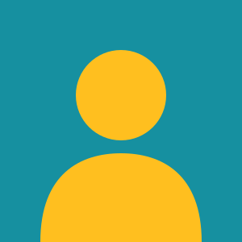

عن مشوار
مشوار دليل مجاني يجمع فعاليات دمشق في صفحة واحدة، حتى لا تفوتك أمسية أو معرض لأنك سمعت عنه متأخراً.
هدفنا
أن يعرف كل من في المدينة ماذا يجري حوله، بمعلومات واضحة: متى، وأين، وكم يكلّف الدخول.
رؤيتنا
مدينة تمتلئ ساحاتها وبيوتها القديمة بالناس، وجمهور يكتشف الفنانين والفرق المحلية.
رسالتنا للمجتمع
ننشر الفعاليات مجاناً للمنظمين الصغار والكبار، ونعطي الأولوية للأنشطة المفتوحة للعائلات.
١٢فعالية
١١مكاناً
٤تصنيفات
من صنع الدليل
مشروع فردي لمقرر برمجة الويب 1.

محمد باسل الصفدي
التصميم، البرمجة، وجمع الفعاليات
mhd_bassel_343189 · C4
سياسات النشر
ما تحتاج معرفته قبل إرسال فعاليتك.
أرسل لنا من صفحة اتصل بنا واختر موضوع "تقديم فعالية": الاسم، التاريخ والوقت، المكان، وصف قصير، وصورة إن وُجدت.
نراجع الطلب وننشره خلال يومي عمل.
- أن تكون الفعالية داخل دمشق أو ريفها ومفتوحة للجمهور.
- أن يكون التاريخ والمكان مؤكدين.
- لا ننشر الإعلانات التجارية البحتة أو المحتوى المسيء.
إذا تغيّر الموعد أو أُلغيت الفعالية، راسلنا من البريد نفسه الذي أرسلت منه الطلب، ونحدّث الصفحة في اليوم ذاته.
مصادر الصور
كل الصور من Wikimedia Commons برخص مفتوحة، اضغط على اسم المصور لترى الصورة الأصلية.
- ليلة طرب في خان أسعد باشا: Vyacheslav Argenberg — CC BY 4.0
- معرض الحِرف الدمشقية: Dosseman — CC BY-SA 4.0
- ماراثون دمشق الخيري: Ahmadac — ملكية عامة
- يوم العائلة في حديقة تشرين: Karkoor2006 — CC BY-SA 4.0
- سينما في القلعة: Mewes — ملكية عامة
- ورشة رسم للأطفال: LBM1948 — CC BY-SA 4.0
- دوري كرة السلة للأحياء: Ildar Sagdejev — CC BY-SA 4.0
- حفل الكورال الشبابي: مصور غير معروف — CC0
- أمسية شعرية في النوفرة: Sheam k — CC BY-SA 3.0
- سوق الشتاء في باب توما: Dosseman — CC BY-SA 4.0
- بطولة الشطرنج المفتوحة: Jorge Royan — CC BY-SA 3.0
- مهرجان موسيقى الشتاء: Shixart1985 — CC BY 2.0